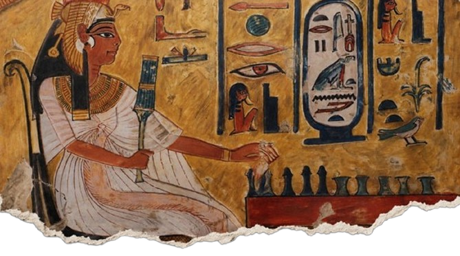
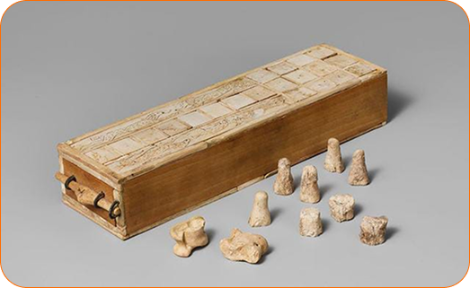
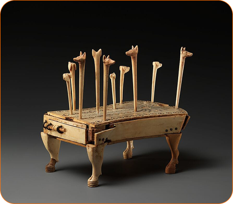
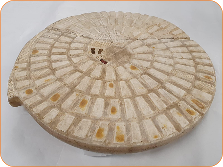

KEMET: JOGOS
Os jogos faziam parte do cotidiano dos antigos egípcios, principalmente os jogos de tabuleiro. Eles eram praticados por pessoas de diferentes classes sociais e aparecem representados em pinturas, túmulos e objetos arqueológicos. Entre os principais jogos estavam o Senet, o Mehen e o jogo dos Cães e Chacais.
Jogos famosos
-

Senet
Um dos jogos mais populares do Egito Antigo. Era jogado em um tabuleiro com 30 casas, e os jogadores movimentavam suas peças pelo percurso. Com o tempo, passou a ser associado à jornada para a vida após a morte
-
Caẽs e Chacais
Jogo do Médio Império, disputado por dois jogadores. O tabuleiro possuía 58 buracos e peças com cabeças de cães e chacais. Era provavelmente uma espécie de corrida, na qual cada jogador tentava levar suas peças até o final.

-
Mehen
Conhecido como Jogo da Serpente, possuía um tabuleiro circular em forma de serpente enrolada. O jogo é muito antigo e estava relacionado simbolicamente ao deus-serpente Mehen, que protegia o deus solar Rá durante sua jornada noturna.

Venha jogar nosso
jogo!!!
Ao clicar em jogar você será direcionado para próxima página com instruções para o jogo.
Jogar